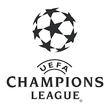
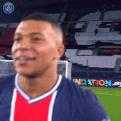
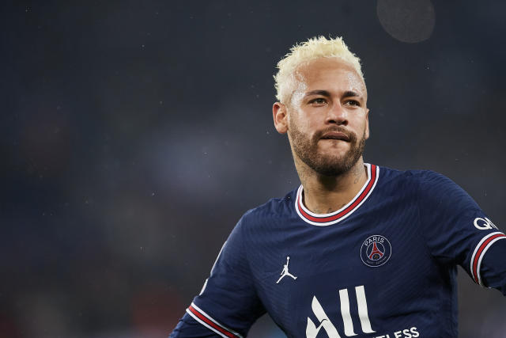
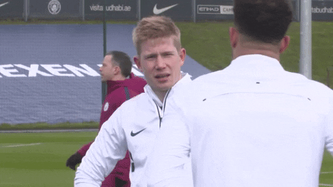
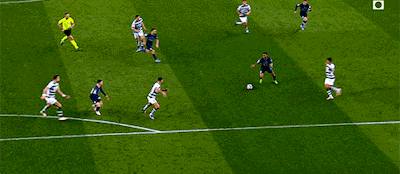
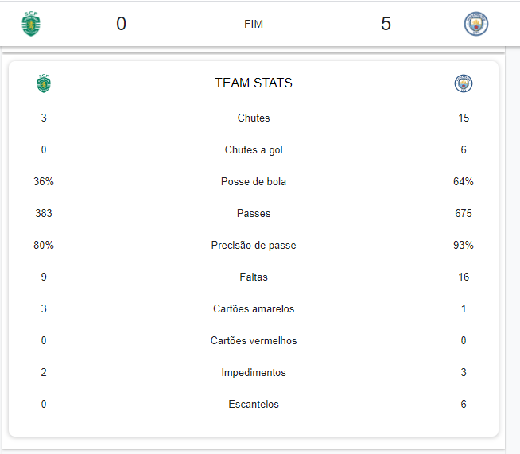

Champions League

"Tivemos Grandes jogos Terça-feira(15/02) com 2 grandes jogos
Acompanhe um resumo dos jogos"
PSG X Real Madrid

Com esse jogão que teve o Craque Neymar entrando no final do jogo e mudando a cara do jogo.

No jogo so deu PSG e Real Madrid ficou só se defendendo,
mais foi nos minutos finais que o jogo foi decidido.

Sporting X Manchester City

Em jogo eletrizante City atropela o Sporting por um placar de 5 a 0 fora de casa
E com Direito a Golaço de Sterling

